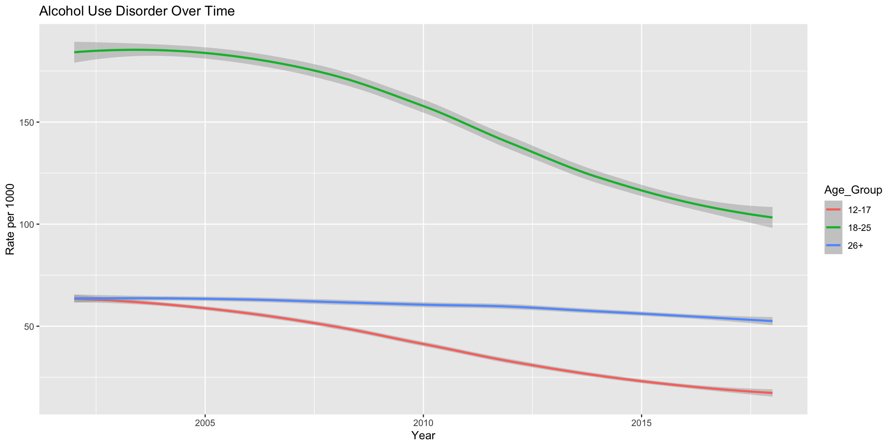
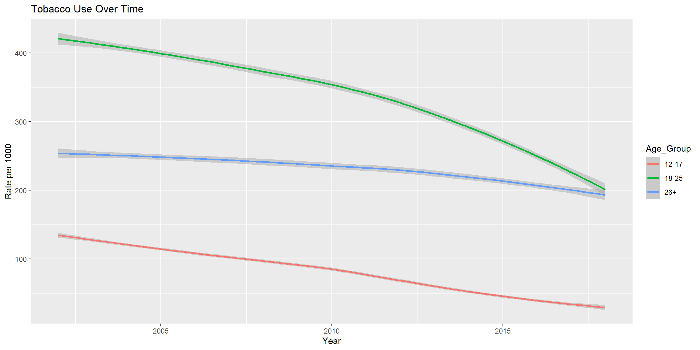
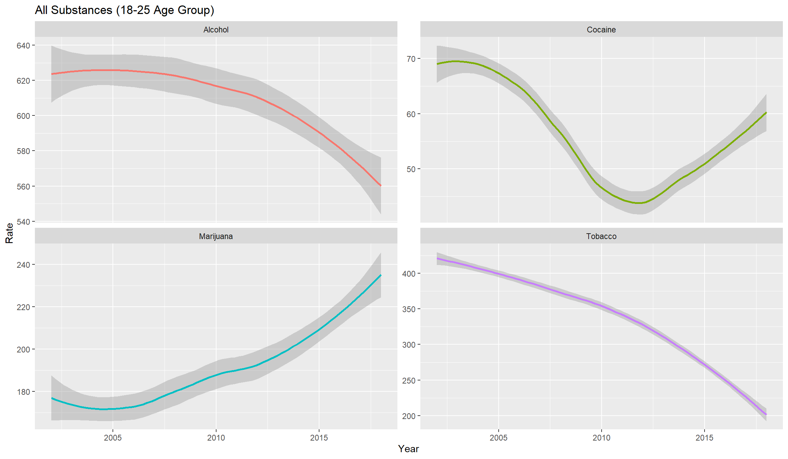
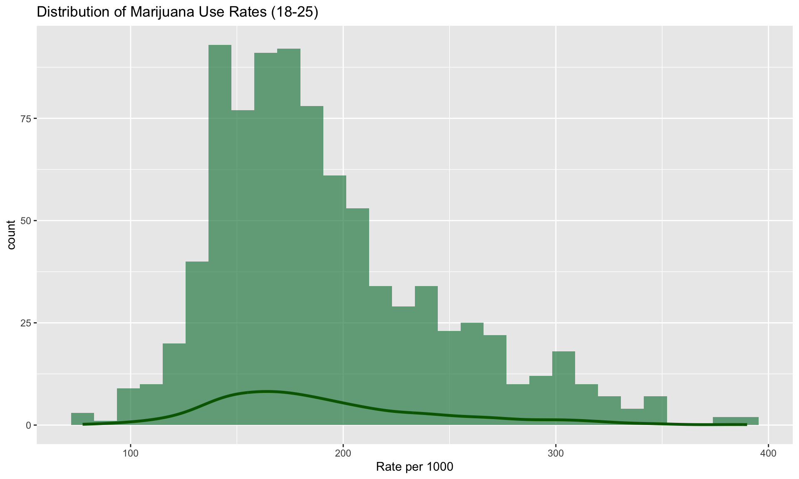
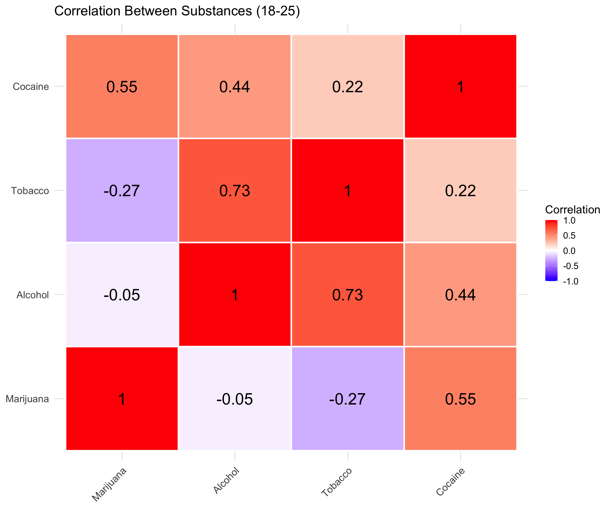

Dimensions: 867 observations × 53 variablesYears: 2002 - 2018 States: 51 Stats 115 Final Project
TO DO
Dimensions: 867 observations × 53 variablesYears: 2002 - 2018 States: 51 Key Variables:
Age Groups:
The 18–25 age group shows an increasing rate per 1,000 over time and remains significantly higher than the other two age groups.

The 18–25 age group still shows the highest alcohol disorder rate per 1,000, but rates for all three age groups gradually decrease over time.

The 18–25 age group shows the highest tobacco usage rate per 1,000. Rates for all three age groups gradually decline over time, but at different speeds, with the 18–25 group eventually converging with the 26+ group.



Two distinct camps: Cocaine & Marijuana users (r = 0.55) vs Alcohol & Tobacco users (r = 0.73)
Key insight: Marijuana and Tobacco negatively correlated (r = -0.27) - both are smoking activities, individuals choose one over the other
How do years of economic hardship (2008) affect alcohol rates across all age groups?
Initially, we thought that many people would cope with hardship by abusing alcohol (as seen in popular culture), but we also figured that many households might also employ a tighter monetary policy to save some money.
Did early state-level marijuana legalization in 2012 (Washington, Colorado) and 2014 (Alaska, Oregon) lead to higher marijuana-use rates among ages 18–25, beyond the broader national trend?
Our exploratory analysis suggested that marijuana use among 18–25-year-olds rose after legalization. We then asked whether legalization acted as an additional driver of growth in early-adopter states, or whether usage was simply increasing along with the national trajectory.
Early Adopter States:
Our Analysis:
Compare marijuana usage rates in these 4 early-adopter states vs. all other states to identify:
Pre-2012 Average Rates (per 1000): Early Adopters: 220.58 Other States: 174.73 Difference: 45.85 Post-2014 Average Rates (per 1000): Early Adopters: 294.44 Other States: 211.56 Difference: 82.88 Change from Pre-2012 to Post-2014: Early Adopters: + 73.86 ( 33.5 % increase) Other States: + 36.83 ( 21.1 % increase)Interpretation:
The Numbers Tell the Story:
Pre-legalization (before 2012): - Early adopters: 220.6 per 1000 - Other states: 174.7 per 1000 - Already 26% higher in early adopter states
Post-legalization (2014+): - Early adopters: 294.4 per 1000
- Other states: 211.6 per 1000 - Gap widened to 39% higher
Key Finding: - Early adopters: 33.5% increase (+73.9 per 1000) - Other states: 21.1% increase (+36.8 per 1000) - Early adopters increased 58% faster than other states
Answer: Legalization appears to have accelerated marijuana usage beyond the national trajectory. Early adopter states not only started with higher baseline usage (suggesting pre-existing demand), but also experienced significantly steeper increases post-legalization.
Hypothesis Test Options:
1. Two-Sample t-test on Growth Rates - Compare % increases: 33.5% vs 21.1% - Tests if growth rates significantly differ
2. Interaction Effect (Regression) - Model: Rate ~ Year + Group + Year×Group - Tests if the slope (time trend) differs by group
Let’s run a simple t-test:
\[ H_0:\ \mu_{\text{Early growth}} = \mu_{\text{Other growth}} \]
\[ H_1:\ \mu_{\text{Early growth}} > \mu_{\text{Other growth}} \]
Two-Sample t-test: Early Adopters vs Other StatesMean growth Early Adopters: 34.9 Mean growth Other States: 23.13 t-statistic: 0.85 p-value: 0.2249
Conclusion: No significant difference detectedWhy Bayesian?
\[ Rate_{it} \sim \text{Normal}(\mu_{it}, \sigma) \]
\[ \mu_{it} = \alpha_i + \beta_1(Year_t - 2012) + \beta_2 Post_{it} \]
Priors:
\[ \alpha_i \sim \text{Normal}(\alpha_0, \tau_\alpha) \]
\[ \alpha_0 \sim \text{Normal}(180, 50) \]
\[ \tau_\alpha \sim \text{Half-Normal}(30) \]
\[ \beta_1 \sim \text{Normal}(0, 10) \]
\[ \beta_2 \sim \text{Normal}(0, 20) \]
\[ \sigma \sim \text{Half-Normal}(25) \]
Key Parameter: \(β_2\) (Post-Legalization Effect)
If \(β_2 > 0\), marijuana-use rates increased after legalization in treated states beyond the broader national trend. Posterior \(P(β_2 > 0 \mid data)\) gives the probability that this effect is positive under the model.
Model Notes:
\(Post_{it}\): state-specific post-legalization indicator, since legalization occurred in different years across states
\(α_i\): state-specific baseline marijuana-use level
Time is centered at 2012 for easier interpretation of the intercept and trend
Posterior Predictive Checks:
Simulate replicated state-year rates from the posterior
Compare simulated values to observed trends over time
Check whether the model captures national trends, state-level variation, and post-legalization shifts
The traceplots show good mixing across chains
Density overlays are highly consistent across chains. This suggests the posterior simulation converged well and the MCMC samples are reliable for inference.
Our simulated data from the posterior match the observed distribution and trend quite well. The model captures the main structure of the marijuana-use data reasonably well.
Credible Intervals
2.5% 97.5%
(Intercept) 184.873977 209.439145
Year_c 3.213697 3.746012
Post 30.123630 49.080602
sigma 18.071786 19.923678
Sigma[State:(Intercept),(Intercept)] 1413.171864 3094.859547Posterior probability
[1] 1Posterior Summary:
\(95\%\) credible interval for \(β_1\) (\(Year_c\)): \([3.21,\ 3.75]\)
\(95\%\) credible interval for \(β_2\) (\(Post\)): \([30.12,\ 49.08]\)
\(P(β_2 > 0 \mid data) = 1.00\)
Interpretation: The positive interval for \(β_1\) suggests that marijuana-use rates were already increasing over time nationwide, by about 3.2 to 3.7 rate points per year on average. Even after accounting for that broader upward trend and baseline differences across states, the model estimates that post-legalization years in treated states were associated with an additional increase of about 30 to 49 rate points. This effect is credibly positive, with posterior probability essentially equal to 1.
Descriptive Analysis:
Frequentist Test:
Bayesian Model:
The model estimated a positive national time trend: \(95\%\) CI for \(β_1\): \([3.21,\ 3.75]\)
The post-legalization effect remained strongly positive: \(95\%\) CI for \(β_2\): \([30.12,\ 49.08]\)
\(P(β_2 > 0 \mid data) = 1.00\)
Key Insight: The descriptive and frequentist results suggest an increase after legalization, but the Bayesian model gives the clearest conclusion: even after accounting for a broader upward national trend, post-legalization years in treated states were associated with substantially higher marijuana-use rates.